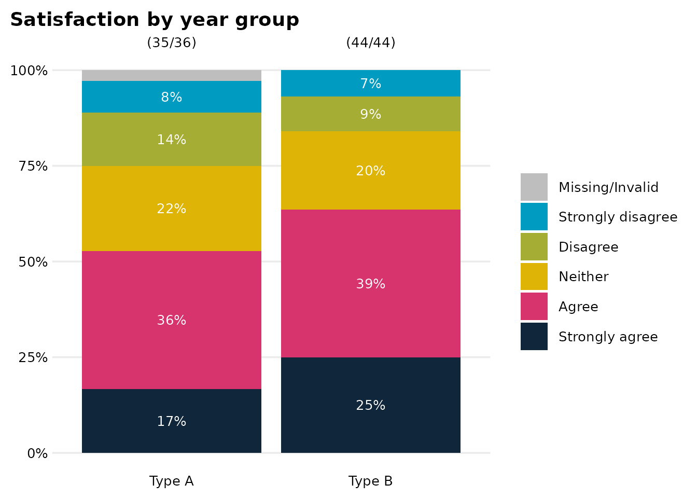
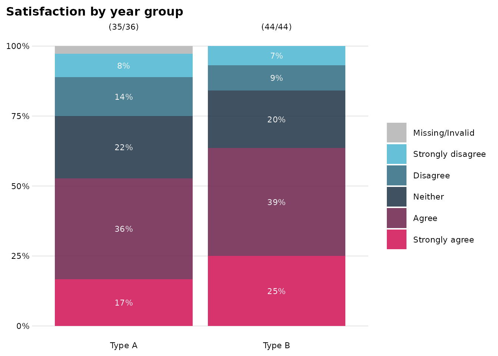
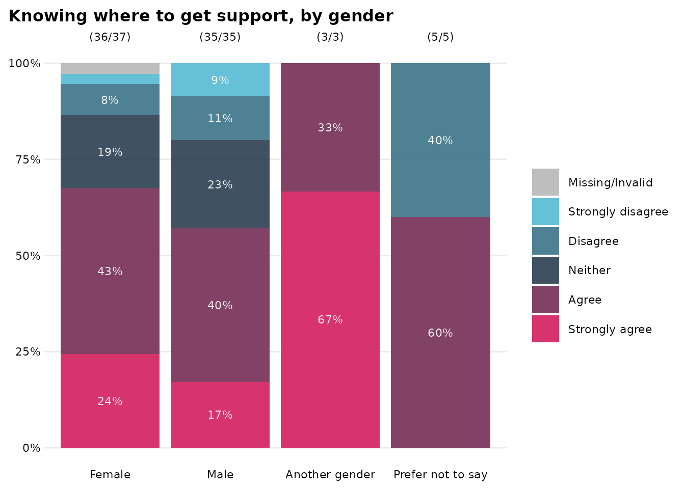
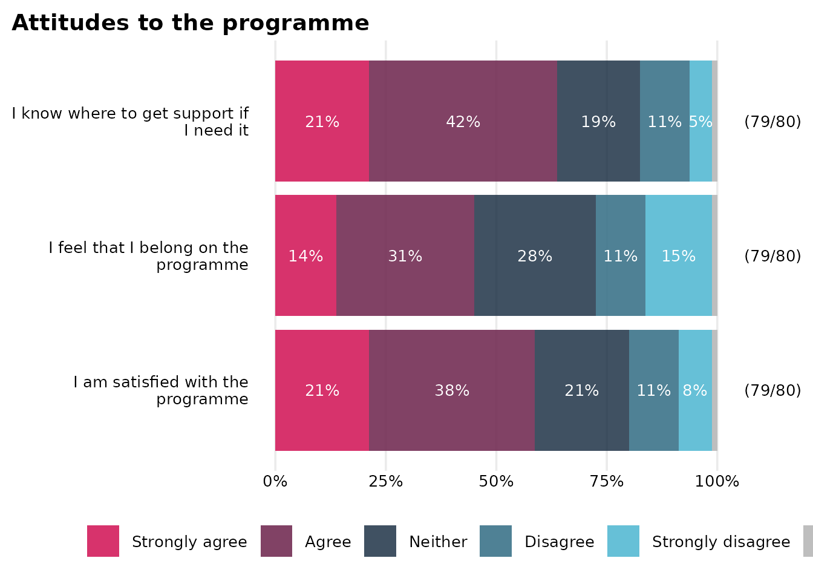
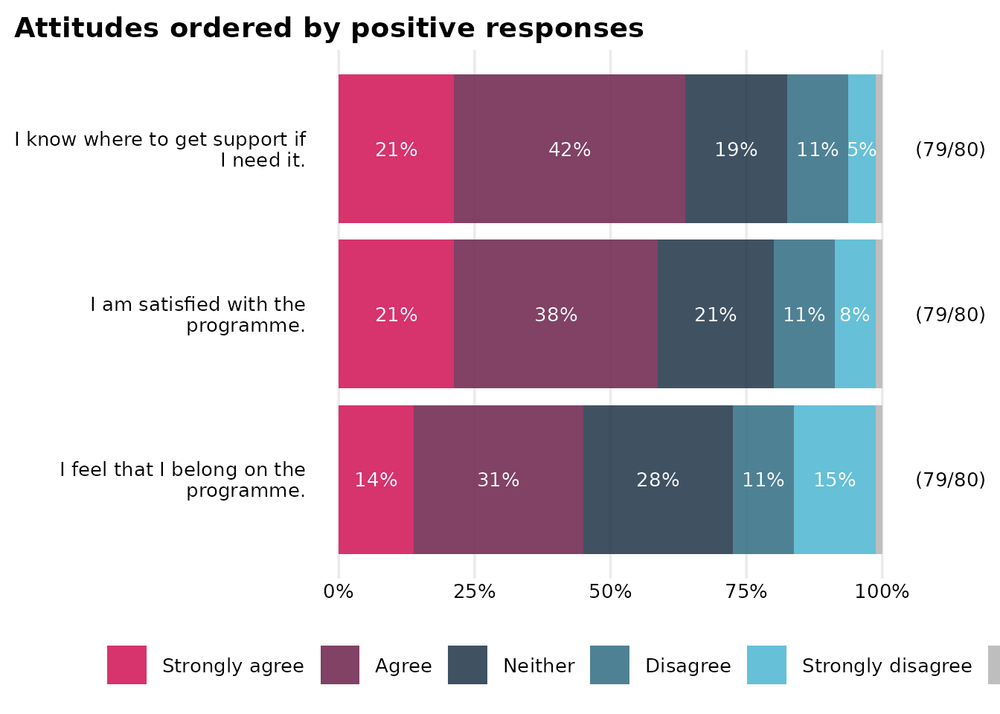
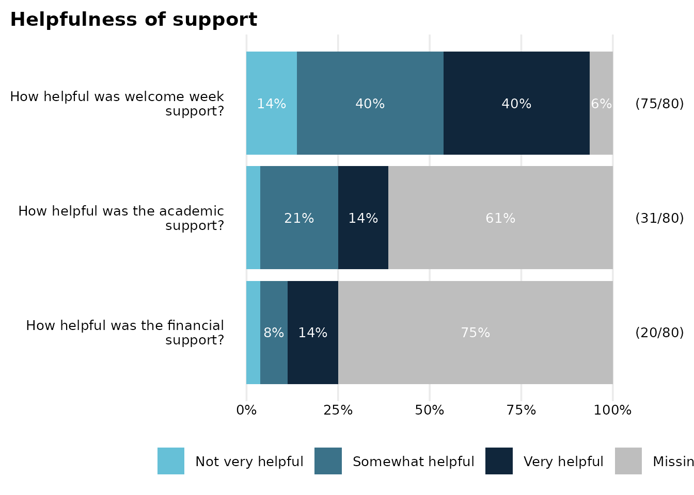
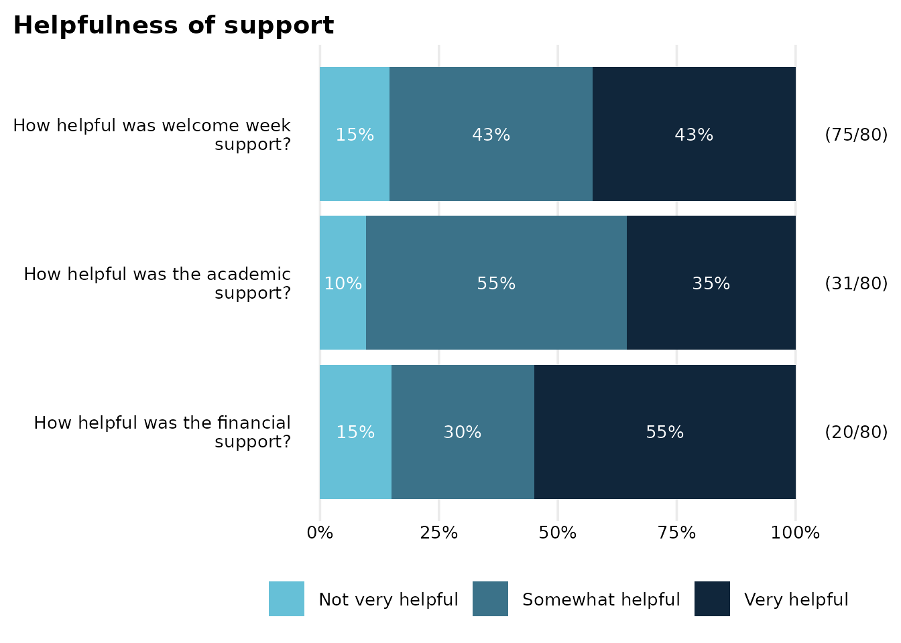

dave_plotting_functions
dave_plotting_functions.RmdFirst load the OMESurvey package and a couple of other
packages (nice, inoffensive ones hopefully) that are useful.
library(OMESurvey)
library(tibble)
library(dplyr)
#>
#> Attaching package: 'dplyr'
#> The following objects are masked from 'package:stats':
#>
#> filter, lag
#> The following objects are masked from 'package:base':
#>
#> intersect, setdiff, setequal, unionFirst create some dummy survey data and a corresponding data dictionary to use in the vignette. The data contains the following variables:
-
respondent_id: a unique respondent identifier (included in the raw data but deliberately omitted from the dictionary to demonstrate handling of extra variables). -
StartDate: a survey start date (also omitted from the dictionary so that extra_vars behaviour can be illustrated). -
school_type: a categorical grouping variable with values Type A and Type B. -
gender: a second categorical grouping variable (included to demonstrate grouped summaries and plots). -
q_satisfaction,q_belonging, andq_support: three Likert-style attitude questions with the same response scale (to demonstrate categorical summaries andsummary_plot_stacked_bar()). -
study_hours: a numeric survey response giving estimated weekly study hours. -
wellbeing_scoreandconfidence_score: numeric score variables on a 0–10 scale (used to demonstrateOME_boxplot()andsummary_plot_boxplot()). -
q_used_support: a yes/no branching variable indicating whether the respondent used support services. -
q_extra_support: a conditional follow-up question, only relevant whereq_used_support == "Yes". -
q_other_comments: a free-text response variable (used to demonstrate how text fields are handled in the report).
The dummy data also includes a small number of sentinel or deliberately problematic values, such as -999, -888, -777, an out-of-range numeric value, and a non-allowed categorical response. These are included so that the validation and diagnostic parts of the report have something meaningful to show and the examples of plotting functions can show their capabilities.
Preview the example inputs
Before rendering a report or preparing the data, it is useful to inspect both the raw survey data and the dictionary.
Preparing the data and dictionary is part of pre-processing, so this
should need doing once only. Guidance on doing that is in the
Preprocessing SOP (which, at time of writing, is the Word document
20260408_SOP_Pre-processing in the/a folder of SOPs). This
includes information about constructing the data dictionary and what the
-999/-888/-777 missing codes mean / are used for.
Save example inputs to temporary files
For the purposes of the vignette, we save the dummy data as a CSV
file and the corresponding dictionary as an Excel workbook. The
dictionary is written to a sheet called “example_survey”, which is the
sheet name we will pass to render_survey_summary() and
survey_prepare_data() below.
#> [1] "/tmp/RtmptpqKDP/example_data_1d325f3bbc56.csv"
#> [1] "/tmp/RtmptpqKDP/example_survey_dictionary_1d32734d521b.xlsx"Render the automated summary report
One can now use render_survey_summary() to create an
HTML summary report from the dummy survey data and dictionary, using
code along the lines of the following. This isn’t done here as it’s
tricky and not the main point of the document.
render_survey_summary(
data_path = <path to data file>,
dict_path = <path to dictionary file>,
dict_sheet = "example_survey",
output_file = <filename for output file, e.g. 'year_X_summary.html'>,
output_dir = <path to folder for output file>,
output_title = "Year X pupil survey summary",
output_author = "A Nonymous"
)The returned value of this function is the path to the generated HTML file. Open it in a browser to view the automated report.
Prepare the data for further analysis
The report function prepares the data internally, but it is often
useful to prepare the data directly for further analysis and plotting.
Here we use survey_prepare_data() to read the same CSV data
and Excel dictionary, validate/coerce the dictionary-backed variables,
and return a prepared data frame.
We use extra_vars = "suffix_asis" so that variables
present in the raw data but absent from the dictionary, such as
respondent_id and StartDate, are retained with
an _asis suffix.
prep <- survey_prepare_data(
data_path = data_path,
dict_path = dict_path,
dict_sheet = "example_survey",
extra_vars = "suffix_asis"
)
survey_data <- prep$data
validation_df <- prep$validation_dfWe can take a quick look at the prepared data; noting particularly
the names of the variables: those in the dictionary have the raw
character-based version of the variable with the _raw
suffix and the original variable name containing the
tidied-and-coerced-to-type variable, and those not mentioned in the
dictionary are appended with _asis (in accordance with the
extra_vars option).
dplyr::glimpse(survey_data)
#> Rows: 80
#> Columns: 30
#> $ respondent_id_asis <chr> "R001", "R002", "R003", "R004", "R005",…
#> $ StartDate_asis <date> 2026-01-31, 2026-01-15, 2026-01-19, 20…
#> $ school_type <fct> Type B, Type B, Type B, Type A, Type A,…
#> $ gender <fct> Male, Male, Female, Female, Male, Male,…
#> $ q_satisfaction <fct> Neither, Agree, Neither, Strongly agree…
#> $ q_belonging <fct> Strongly agree, Agree, Agree, Strongly …
#> $ q_support <fct> Strongly agree, Strongly agree, NA, Nei…
#> $ study_hours <dbl> 14.4, 6.0, 14.3, 45.0, 4.6, 14.6, 24.3,…
#> $ wellbeing_score <dbl> 0, 2, 3, 0, 4, 10, 3, NA, 6, 2, 9, 2, 1…
#> $ confidence_score <dbl> 5, 8, 7, 0, 5, 1, 7, 9, 7, 8, 7, NA, 8,…
#> $ q_finance_support_used <fct> No, No, No, No, No, Yes, No, Yes, No, N…
#> $ q_finance_support_helpful <fct> NA, NA, NA, NA, NA, Somewhat helpful, N…
#> $ q_academic_support_used <fct> No, No, No, Yes, No, Yes, No, No, Yes, …
#> $ q_academic_support_helpful <fct> NA, NA, NA, Very helpful, NA, Somewhat …
#> $ q_welcome_support_helpful <fct> Somewhat helpful, Very helpful, Somewha…
#> $ q_other_comments <chr> "-999", "-999", "More advance notice wo…
#> $ school_type_raw <chr> "Type B", "Type B", "Type B", "Type A",…
#> $ gender_raw <chr> "Male", "Male", "Female", "Female", "Ma…
#> $ q_satisfaction_raw <chr> "Neither", "Agree", "Neither", "Strongl…
#> $ q_belonging_raw <chr> "Strongly agree", "Agree", "Agree", "St…
#> $ q_support_raw <chr> "Strongly agree", "Strongly agree", "No…
#> $ study_hours_raw <chr> "14.4", "6", "14.3", "45", "4.6", "14.6…
#> $ wellbeing_score_raw <chr> "0", "2", "3", "0", "4", "10", "3", "-9…
#> $ confidence_score_raw <chr> "5", "8", "7", "0", "5", "1", "7", "9",…
#> $ q_finance_support_used_raw <chr> "No", "No", "No", "No", "No", "Yes", "N…
#> $ q_finance_support_helpful_raw <chr> "-888", "-888", "-888", "-888", "-888",…
#> $ q_academic_support_used_raw <chr> "No", "No", "No", "Yes", "No", "Yes", "…
#> $ q_academic_support_helpful_raw <chr> "-888", "-888", "-888", "Very helpful",…
#> $ q_welcome_support_helpful_raw <chr> "Somewhat helpful", "Very helpful", "So…
#> $ q_other_comments_raw <chr> "-999", "-999", "More advance notice wo…If reactable is available, we can preview the prepared
data interactively.
The validation output summarises the checks carried out for each dictionary-backed variable.
Single-question categorical plot with
OME_stacked_bar()
OME_stacked_bar() is useful for plotting one categorical
survey response, optionally broken down by a grouping variable. Here we
show satisfaction by school type
OME_stacked_bar(
dat = survey_data,
response_var = q_satisfaction,
group_var = school_type,
count_style = "both",
titleText = "Satisfaction by year group"
)
The default fill colours for the bars are designed to be as distinct
as possible (the ‘distinct’ or ‘qualitative’ type of palette from
OMESurvey::get_OME_colours()). This could be modified
manually by passing
OMESurvey::get_OME_colours(n=5, type='divergent') as the
colo argument of the plotting function; but the validation
output has that set up and ready to be passed along:
validation_df |> filter(variable=="q_satisfaction") |> pull(colo) |> unlist()
#> Strongly disagree Disagree Neither Agree
#> "#66C0D7FF" "#3B7389E5" "#10263BCC" "#732C53E5"
#> Strongly agree
#> "#D7336CFF"Passing this to OME_stacked_bar() we get
OME_stacked_bar(
dat = survey_data,
response_var = q_satisfaction,
group_var = school_type,
colo = validation_df |> filter(variable=="q_satisfaction") |> pull(colo) |> unlist(),
count_style = "both",
titleText = "Satisfaction by year group"
)
This is a common recurring theme for factors and stacked bar charts: you need to tell the plotting function what colour palette to use, but the appropriate one is always available through the validation data frame:
(This method is preferable to passing OMESurvey::get_OME_colours(n=5, type=‘divergent’) to the plotting function’s colo argument because it also uses a named vector, which makes the matchup of levels and colours a little less likely to go wrong in some unlikely-but-possible edge-case scanarios.)
We can use the same method to lookat another Likert-scale type question, here grouped by a different variable.
OME_stacked_bar(
dat = survey_data,
response_var = q_support,
group_var = gender,
colo = validation_df |> filter(variable=="q_support") |> pull(colo) |> unlist(),
count_style = "both",
titleText = "Knowing where to get support, by gender"
)
Multi-question categorical plot with
summary_plot_stacked_bar()
summary_plot_stacked_bar() summarises several
categorical questions in one horizontal stacked bar chart. The variables
representing the questions must share the same response scale. Here the
three attitude questions all use the same Likert scale.
attitude_labels <- c(
q_satisfaction = "I am satisfied with the programme",
q_belonging = "I feel that I belong on the programme",
q_support = "I know where to get support if I need it"
)
survey_data |>
dplyr::select(q_satisfaction, q_belonging, q_support) |>
summary_plot_stacked_bar(
colo = validation_df |> filter(variable=="q_satisfaction") |> pull(colo) |> unlist(),
labels_vec = attitude_labels,
count_style = "both",
titleText = "Attitudes to the programme"
)
A couple of things to note here:
- The vector of colours for
colois simply taken from one of the questions. (I could have something fancier, but it would have been hard.) - We need to select() the variables to use in the data frame and then
pass that to the plotting function. The function treats every variable
in the dataframe it receives as a question to be plotted, hence the need
to select() them first. Or, of course, use a base R equivalent:
survey_data[,c("q_satisfaction", "q_belonging", "q_support")] |> summary_plot_stacked_bar(...).
The questions can also be ordered according to a response pattern
using the order_values option. For example, we can order by
the proportion of respondents answering "Agree" or
"Strongly agree". In this example we also show how to
extract some more details (the question labels as well as the colour
palette) from the validation_df rather than hard-coding
them.
attitude_vars <- c("q_satisfaction", "q_belonging", "q_support")
# find labels that match vars
attitude_labels <- validation_df |>
dplyr::filter(variable %in% attitude_vars) |>
dplyr::arrange(match(variable, attitude_vars)) |>
dplyr::pull(item_statement) |>
stats::setNames(attitude_vars)
# find colour palette
attitude_colo <- validation_df |>
dplyr::filter(variable == attitude_vars[1]) |>
dplyr::pull(colo) |>
unlist()
# plot
survey_data |>
dplyr::select(dplyr::all_of(attitude_vars)) |>
summary_plot_stacked_bar(
colo = attitude_colo,
labels_vec = attitude_labels,
count_style = "both",
order_values = c("Agree", "Strongly agree"),
titleText = "Attitudes ordered by positive responses"
)
Dealing with survey routing
The three helpfulness questions use the same response scale, but they do not all have the same denominator. Financial-support helpfulness is only relevant to respondents who used financial support, academic-support helpfulness is only relevant to respondents who used academic support, while welcome-week helpfulness is asked of everyone. Just plotting these variables is a bit misleading as we do not respect the conditions/routing.
survey_data |>
janitor::tabyl(q_finance_support_helpful, q_finance_support_used) |>
janitor::adorn_title() |>
kable_narrow()| q_finance_support_used | |||
|---|---|---|---|
| q_finance_support_helpful | Yes | No | NA_ |
| Very helpful | 11 | 0 | 0 |
| Somewhat helpful | 6 | 0 | 0 |
| Not very helpful | 3 | 0 | 0 |
| NA | 5 | 54 | 1 |
helpful_vars <- c(
"q_finance_support_helpful",
"q_academic_support_helpful",
"q_welcome_support_helpful"
)
# Get labels and colours from validation_df
helpful_labels <-
validation_df |>
dplyr::filter(variable %in% helpful_vars) |>
dplyr::arrange(match(variable, helpful_vars)) |>
dplyr::pull(item_statement) |>
stats::setNames(helpful_vars)
helpful_colo <-
validation_df |>
dplyr::filter(variable == helpful_vars[1]) |>
dplyr::pull(colo) |>
(\(x) x[[1]])()
# plot
survey_data |>
dplyr::select(dplyr::all_of(helpful_vars)) |>
summary_plot_stacked_bar(
labels_vec = helpful_labels,
colo = helpful_colo,
count_style = "both",
titleText = "Helpfulness of support",
)
Simply removing missing values with the na.rm=TRUE
option gives a nicer-looking plot but misses the point somewhat: most
missing / non-allowed values are because of routing, but several are
not.
survey_data |>
dplyr::select(dplyr::all_of(helpful_vars)) |>
summary_plot_stacked_bar(
labels_vec = helpful_labels,
colo = helpful_colo,
na.rm = TRUE,
count_style = "both",
titleText = "Helpfulness of support"
)
The plot is an improvement, but does not properly capture the 20 substantive responses, 5 missing/invalid responses, 55 non-routed non-responses.
The summary_plot_stacked_bar() function supports an
“extended” data format to deal with this, where each plotted variable
has a name ending _value and companion variables ending
_include, and _plot:
-
*_value: the response value to plot; -
*_include: whether the respondent should be included in that question’s denominator; -
*_plot: whether the response is a valid substantive value to show.
You can construct these these _value,
_include, _plot variables yourself if you
like, but there’s a function
make_extended_summary_plot_data() to do so automatically.
Provide it with the data, the validation information and the variables
you want to work with and it gives you a dataframe ready for passing to
summary_plot_stacked_bar().
Here’s how we can set this up for these helpfulness questions.
# set up variables to work with
helpful_vars <- c(
"q_finance_support_helpful",
"q_academic_support_helpful",
"q_welcome_support_helpful"
)
# build the extended data for plotting
helpful_ext <- make_extended_summary_plot_data(
data = survey_data,
validation_df = validation_df,
vars = helpful_vars
)
#plot
helpful_ext |>
summary_plot_stacked_bar(
dat_format = "extended",
labels_vec = helpful_labels,
colo = helpful_colo,
na.rm = TRUE,
count_style = "both",
titleText = "Helpfulness of support"
)Note especially the label “(20/25)” for the financial support question, capturing the 20 substantive responses (and 5 missing/invalid/non-allowed responses) amongst the 25 respondents who were routed to this question. And the same is true for the academic support question. And the welcome week support question, which was asked to everyone, still has the full number of respondents indicated, reflecting it being asked to everyone and thus not having a condition in the data dictionary.
knitr::knit_exit()